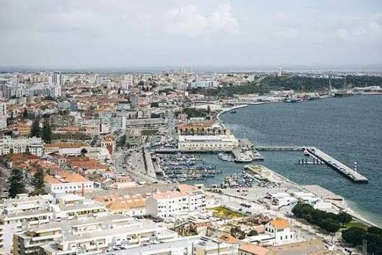

Setúbal, perto do mar
Fotografias
Fotografias · Vídeo · Poesia · Paisagem

Vídeo
Poesia
Setúbal, cidade bela,
Entre a serra e o mar azul,
És de Portugal a estrela,
A brilhar mais a sul.
O mar fica. A página continua.
Uma paisagem para abrandar o ritmo.
Uma pausa junto ao Sado
Uma imagem em movimento como fundo.